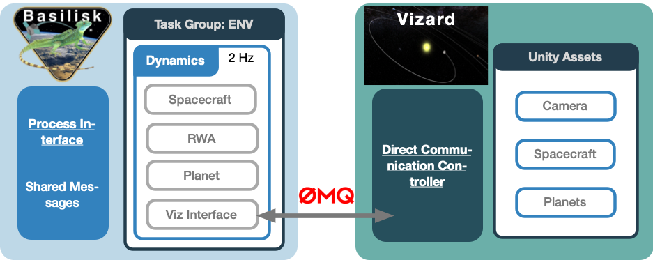

1. BSK_OpNav
1.1. Overview
The goal of the OpNav Scenarios is to simulate Optical Navigation methods and performance in Basilisk.
All of the scenarios provided in basilisk/examples/OpNavScenarios put a spacecraft on orbit about Mars. By extracting
limbs are circles from the images, the spacecraft can point to the planet, and estimate it’s position.

This Basilisk Simulation, which inherits SimulationBaseClass, provides the backbone for all the OpNav simulations
provided in basilisk/examples/OpNavScenarios.
These simulations spawn the Basilisk Vizard visualization in order to provide images for processing.
These images are
handled by the vizInterface module found in src/simulation/vizInterface. A figure illustrating the architecture
is found here:

More details on the software interaction can be found in Chapter 2 of Thibaud Teil’s PhD thesis.
Sequentially, Basilisk modules then receive the images in order to process and navigate using them. This is illustrated
in more detail:

1.2. Running OpNav Simulations
Important
Make sure Basilisk is built to include the OpNav modules by using --opNav True when running conanfile.py.
This is not turned on by default as it will install the large OpenCL library.
In order to call Vizard from python simulations, the path to the downloaded Vizard app must be properly set.
If needed, adjust the following line illustrated below to reflect the path to the Vizard binary:
# TODO : Modify the path to the viz here
appPath = '/Applications/Vizard.app/Contents/MacOS/Vizard' #If on Mac
The Vizard app must therefore be downloaded, and this path must reflect it’s position in the file structure, and its
name. If the path is not properly set, the OpNav simulations will hang (printing that it is waiting for the
Vizard connection). Another option is to manually open the Vizard application after having started the python scenario,
check OpNav or Direct Comm, and provide the tcp/ip address printed by the scenario.
The scripts are tested if all modules are installed, but can be run at full length by calling:
python3 scenario_OpNavAttOD.py
1.3. See the Scene Rendering
By default the Vizard will run in head-less mode where the full scene is not rendered
for viewing as this slows down the simulation. To see the scene, edit the following line
within the scenario script:
TheBSKSim.get_DynModel().vizInterface.noDisplay = False
to set noDisplay flag to False instead of True. Further, 2-way communication is
enabled by adding the line:
TheBSKSim.get_DynModel().vizInterface.liveStream = True
Finally, the Vizard binary is called with the -directComm argument using:
TheScenario.run_vizard("-directComm")
1.4. OpNav Dynamics, Flight Software, and Plotting
The simulations use three other main python scripts.
BSK_OpNavDynamics is similar to the BSKSim versions seen previously. The main additions are
the instantiation of Module: vizInterface, and the camera module.
BSK_OpNavFsw contains the FSW algorithms used in the scenarios. Examples are the Orbit Determination
filters, the pointing guidance module, the CNN module, and more. This file also contains the modeRequest
definitions which enable all the tasks necessary to perform a specific action.
OpNav_Plotting contains the plotting routines. None of the files are saved, but are shown when
the scenario is run with python. Saving is left to the user’s discretion.
-
class BSK_OpNav.BSKSim(fswRate=0.1, dynRate=0.1)[source]
Bases: SimBaseClass
BSK Simulation base class for opNav scenarios
{kind=link}